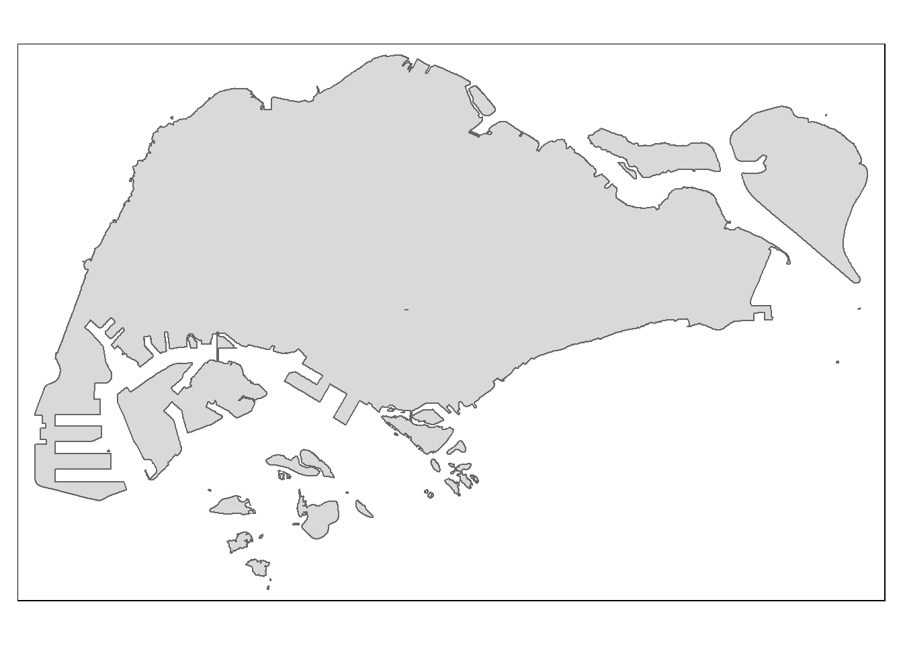
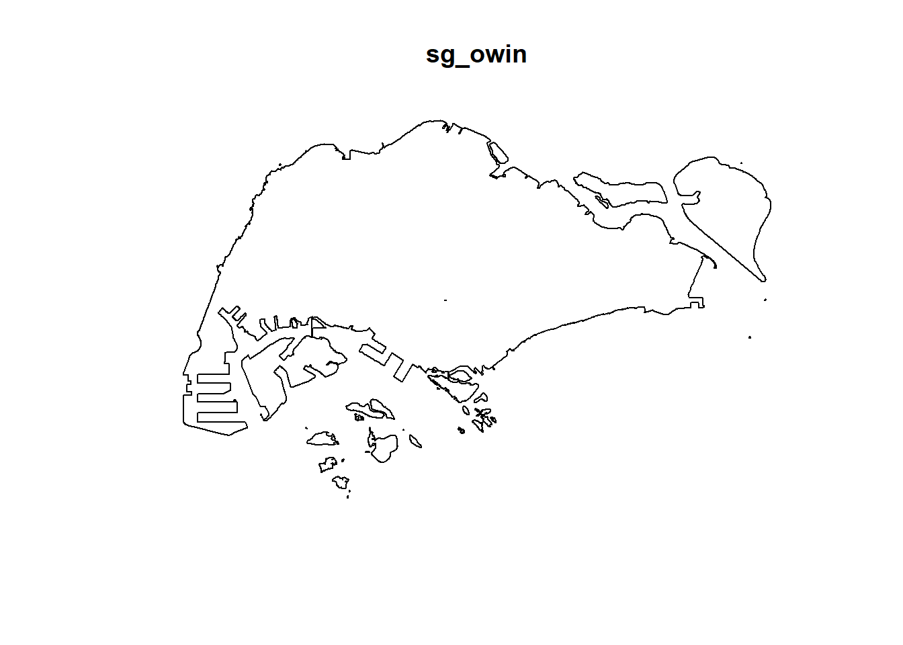
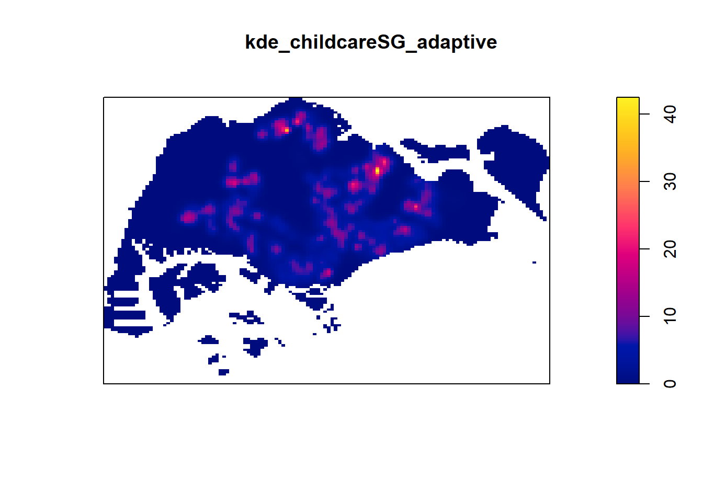
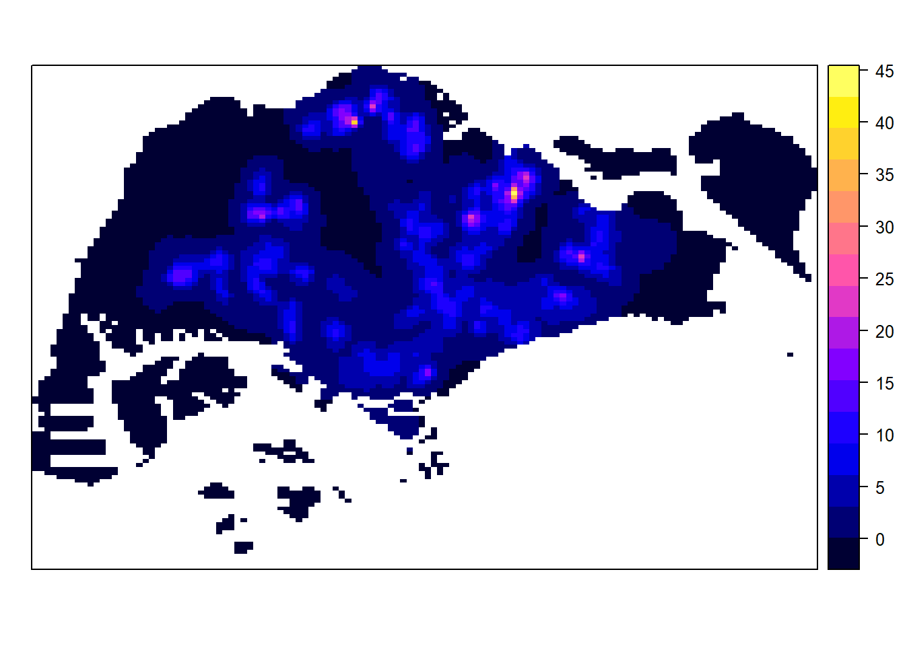
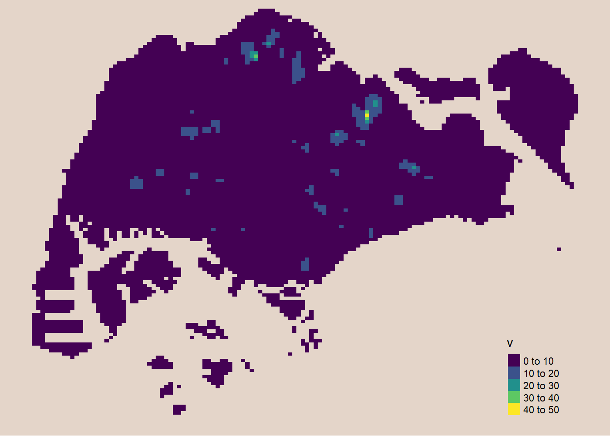
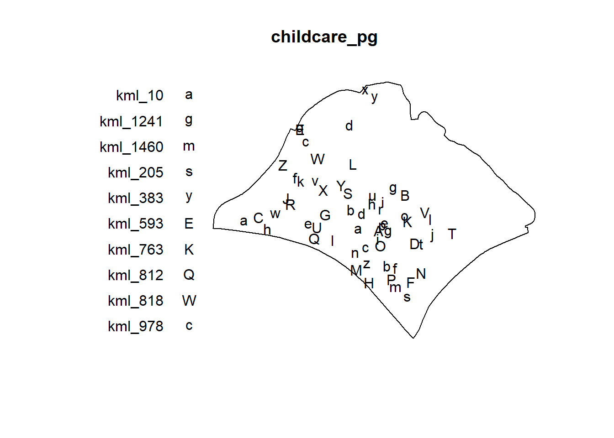

install.packages("maptools", repos = "https://packagemanager.posit.co/cran/2023-10-13")In-class Exercise 2
Set up
Finding maptools
Maptools have been retired. So we installed it from the CRAN repository.
Load packages
pacman::p_load(tidyverse, sf, tmap, ggstatsplot, spatstat)
set.seed(1234)Read the map data
mpsz14_shp <- st_read(dsn = "C:/zzzzzuu/ISSS626GAA/In-class_Ex/In-class_Ex01/Data",
layer = "MP14_SUBZONE_WEB_PL")Reading layer `MP14_SUBZONE_WEB_PL' from data source
`C:\zzzzzuu\ISSS626GAA\In-class_Ex\In-class_Ex01\data' using driver `ESRI Shapefile'
Simple feature collection with 323 features and 15 fields
Geometry type: MULTIPOLYGON
Dimension: XY
Bounding box: xmin: 2667.538 ymin: 15748.72 xmax: 56396.44 ymax: 50256.33
Projected CRS: SVY21Wrangling
Union for the outline
sg_sf <- mpsz14_shp %>%
st_union()
tmap_mode("plot")tmap mode set to plottingqtm(sg_sf)
Let’s try the spatstet.geom method.
childcare_sf <- st_read("C:/zzzzzuu/ISSS626GAA/Hands-on_Ex/Hands-on_Ex02/data/child-care-services-geojson.geojson") %>%
st_transform(crs = 3414)Reading layer `child-care-services-geojson' from data source
`C:\zzzzzuu\ISSS626GAA\Hands-on_Ex\Hands-on_Ex02\data\child-care-services-geojson.geojson'
using driver `GeoJSON'
Simple feature collection with 1545 features and 2 fields
Geometry type: POINT
Dimension: XYZ
Bounding box: xmin: 103.6824 ymin: 1.248403 xmax: 103.9897 ymax: 1.462134
z_range: zmin: 0 zmax: 0
Geodetic CRS: WGS 84childcare <- as_Spatial(childcare_sf)
childcareSG_ppp <- as.ppp(childcare_sf)Warning in as.ppp.sf(childcare_sf): only first attribute column is used for
markssg_owin <- as.owin(sg_sf)
plot(sg_owin)
childcareSG_ppp <- childcareSG_ppp[sg_owin]
childcareSG_ppp.km <- rescale.ppp(childcareSG_ppp, 1000, "km")
kde_childcareSG.bw <- density(childcareSG_ppp.km, sigma=bw.diggle, edge=TRUE, kernel="gaussian")
kde_childcareSG_adaptive <- adaptive.density(childcareSG_ppp.km, method="kernel")
plot(kde_childcareSG_adaptive)
gridded_kde_childcareSG_ad <- as(
kde_childcareSG_adaptive,
"SpatialGridDataFrame")
pacman::p_load(sp)
spplot(gridded_kde_childcareSG_ad)
Following Prof’s upload on in-class exercise
childcare_ppp <- as.ppp(childcare_sf)Warning in as.ppp.sf(childcare_sf): only first attribute column is used for
marksplot(childcare_ppp)Warning in default.charmap(ntypes, chars): Too many types to display every type
as a different characterWarning: Only 10 out of 1545 symbols are shown in the symbol map
summary(childcare_ppp)Marked planar point pattern: 1545 points
Average intensity 1.91145e-06 points per square unit
Coordinates are given to 11 decimal places
marks are of type 'character'
Summary:
Length Class Mode
1545 character character
Window: rectangle = [11203.01, 45404.24] x [25667.6, 49300.88] units
(34200 x 23630 units)
Window area = 808287000 square unitssg_owin <- as.owin(sg_sf)
plot(sg_owin)
summary(sg_owin)Window: polygonal boundary
80 separate polygons (35 holes)
vertices area relative.area
polygon 1 14650 6.97996e+08 8.93e-01
polygon 2 (hole) 3 -2.21090e+00 -2.83e-09
polygon 3 285 1.61128e+06 2.06e-03
polygon 4 (hole) 3 -2.05920e-03 -2.63e-12
polygon 5 (hole) 3 -8.83647e-03 -1.13e-11
polygon 6 668 5.40368e+07 6.91e-02
polygon 7 44 2.26577e+03 2.90e-06
polygon 8 27 1.50315e+04 1.92e-05
polygon 9 711 1.28815e+07 1.65e-02
polygon 10 (hole) 36 -4.01660e+04 -5.14e-05
polygon 11 (hole) 317 -5.11280e+04 -6.54e-05
polygon 12 (hole) 3 -3.41405e-01 -4.37e-10
polygon 13 (hole) 3 -2.89050e-05 -3.70e-14
polygon 14 77 3.29939e+05 4.22e-04
polygon 15 30 2.80002e+04 3.58e-05
polygon 16 (hole) 3 -2.83151e-01 -3.62e-10
polygon 17 71 8.18750e+03 1.05e-05
polygon 18 (hole) 3 -1.68316e-04 -2.15e-13
polygon 19 (hole) 36 -7.79904e+03 -9.97e-06
polygon 20 (hole) 4 -2.05611e-02 -2.63e-11
polygon 21 (hole) 3 -2.18000e-06 -2.79e-15
polygon 22 (hole) 3 -3.65501e-03 -4.67e-12
polygon 23 (hole) 3 -4.95057e-02 -6.33e-11
polygon 24 (hole) 3 -3.99521e-02 -5.11e-11
polygon 25 (hole) 3 -6.62377e-01 -8.47e-10
polygon 26 (hole) 3 -2.09065e-03 -2.67e-12
polygon 27 91 1.49663e+04 1.91e-05
polygon 28 (hole) 26 -1.25665e+03 -1.61e-06
polygon 29 (hole) 349 -1.21433e+03 -1.55e-06
polygon 30 (hole) 20 -4.39069e+00 -5.62e-09
polygon 31 (hole) 48 -1.38338e+02 -1.77e-07
polygon 32 (hole) 28 -1.99862e+01 -2.56e-08
polygon 33 40 1.38607e+04 1.77e-05
polygon 34 (hole) 40 -6.00381e+03 -7.68e-06
polygon 35 (hole) 7 -1.40545e-01 -1.80e-10
polygon 36 (hole) 12 -8.36709e+01 -1.07e-07
polygon 37 45 2.51218e+03 3.21e-06
polygon 38 142 3.22293e+03 4.12e-06
polygon 39 148 3.10395e+03 3.97e-06
polygon 40 75 1.73526e+04 2.22e-05
polygon 41 83 5.28920e+03 6.76e-06
polygon 42 211 4.70521e+05 6.02e-04
polygon 43 106 3.04104e+03 3.89e-06
polygon 44 266 1.50631e+06 1.93e-03
polygon 45 71 5.63061e+03 7.20e-06
polygon 46 10 1.99717e+02 2.55e-07
polygon 47 478 2.06120e+06 2.64e-03
polygon 48 155 2.67502e+05 3.42e-04
polygon 49 1027 1.27782e+06 1.63e-03
polygon 50 (hole) 3 -1.16959e-03 -1.50e-12
polygon 51 65 8.42861e+04 1.08e-04
polygon 52 47 3.82087e+04 4.89e-05
polygon 53 6 4.50259e+02 5.76e-07
polygon 54 132 9.53357e+04 1.22e-04
polygon 55 (hole) 3 -3.23310e-04 -4.13e-13
polygon 56 4 2.69313e+02 3.44e-07
polygon 57 (hole) 3 -1.46474e-03 -1.87e-12
polygon 58 1045 4.44510e+06 5.68e-03
polygon 59 22 6.74651e+03 8.63e-06
polygon 60 64 3.43149e+04 4.39e-05
polygon 61 (hole) 3 -1.98390e-03 -2.54e-12
polygon 62 (hole) 4 -1.13774e-02 -1.46e-11
polygon 63 14 5.86546e+03 7.50e-06
polygon 64 95 5.96187e+04 7.62e-05
polygon 65 (hole) 4 -1.86410e-02 -2.38e-11
polygon 66 (hole) 3 -5.12482e-03 -6.55e-12
polygon 67 (hole) 3 -1.96410e-03 -2.51e-12
polygon 68 (hole) 3 -5.55856e-03 -7.11e-12
polygon 69 234 2.08755e+06 2.67e-03
polygon 70 10 4.90942e+02 6.28e-07
polygon 71 234 4.72886e+05 6.05e-04
polygon 72 (hole) 13 -3.91907e+02 -5.01e-07
polygon 73 15 4.03300e+04 5.16e-05
polygon 74 227 1.10308e+06 1.41e-03
polygon 75 10 6.60195e+03 8.44e-06
polygon 76 19 3.09221e+04 3.95e-05
polygon 77 145 9.61782e+05 1.23e-03
polygon 78 30 4.28933e+03 5.49e-06
polygon 79 37 1.29481e+04 1.66e-05
polygon 80 4 9.47108e+01 1.21e-07
enclosing rectangle: [2667.54, 56396.44] x [15748.72, 50256.33] units
(53730 x 34510 units)
Window area = 781945000 square units
Fraction of frame area: 0.422childcareSG_ppp = childcare_ppp[sg_owin]
childcareSG_ppp.km <- rescale.ppp(childcareSG_ppp,
1000,
"km")
kde_childcareSG_adaptive <- adaptive.density(
childcareSG_ppp.km,
method="kernel")
plot(kde_childcareSG_adaptive)
gridded_kde_childcareSG_ad <- as(
kde_childcareSG_adaptive,
"SpatialGridDataFrame")
spplot(gridded_kde_childcareSG_ad)
tm_shape(gridded_kde_childcareSG_ad) +
tm_raster(palette = "viridis") +
tm_layout(legend.position = c("right", "bottom"),
frame = FALSE,
bg.color = "#E4D5C9")Warning: Currect projection of shape gridded_kde_childcareSG_ad unknown. Long
lat (epsg 4326) coordinates assumed.
Dive into Punggol
pg_owin <- mpsz14_shp %>%
filter(PLN_AREA_N == "PUNGGOL") %>%
as.owin()
childcare_pg = childcare_ppp[pg_owin]
plot(childcare_pg) Warning in default.charmap(ntypes, chars): Too many types to display every type
as a different characterWarning: Only 10 out of 61 symbols are shown in the symbol map
set.seed(1234)A look into Thai Road Accidents
rdacc_sf <- read_csv("C:/zzzzzuu/ISSS626GAA/Take-home_Ex/Take-home_Ex01/Data/thai_road_accident_2019_2022.csv") %>%
filter(!is.na(longitude) & longitude != "",
!is.na(latitude) & latitude != "") %>%
st_as_sf(coords = c(
"longitude", "latitude"),
crs=4326) %>%
st_transform(crs = 32647) Rows: 81735 Columns: 18
── Column specification ────────────────────────────────────────────────────────
Delimiter: ","
chr (10): province_th, province_en, agency, route, vehicle_type, presumed_c...
dbl (6): acc_code, number_of_vehicles_involved, number_of_fatalities, numb...
dttm (2): incident_datetime, report_datetime
ℹ Use `spec()` to retrieve the full column specification for this data.
ℹ Specify the column types or set `show_col_types = FALSE` to quiet this message.